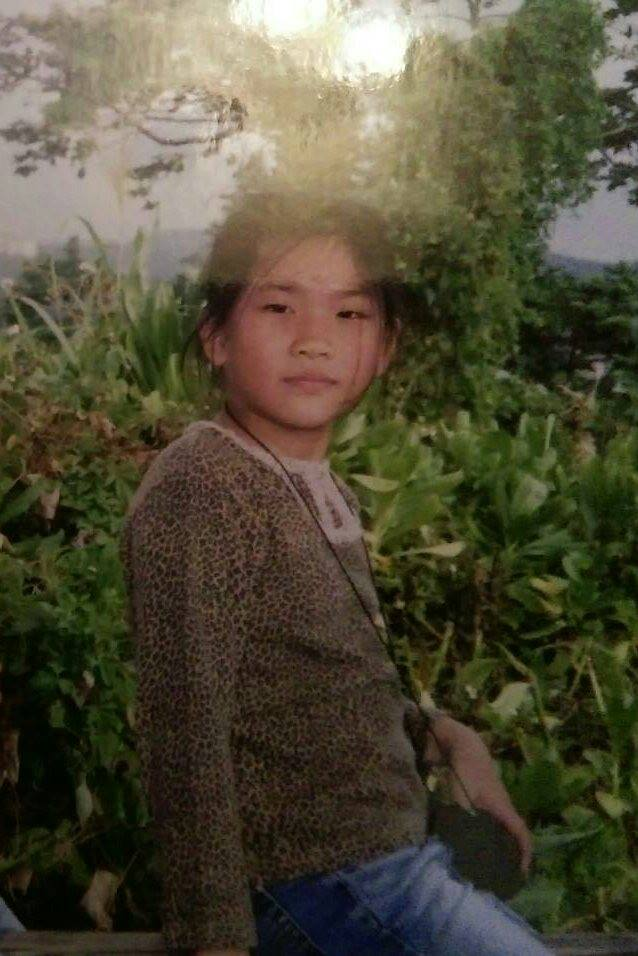
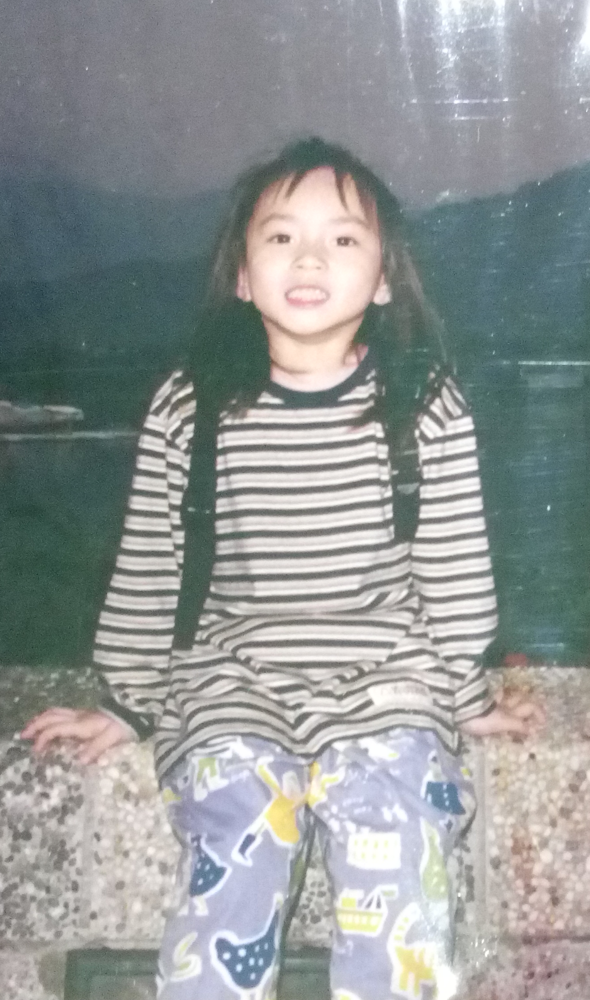
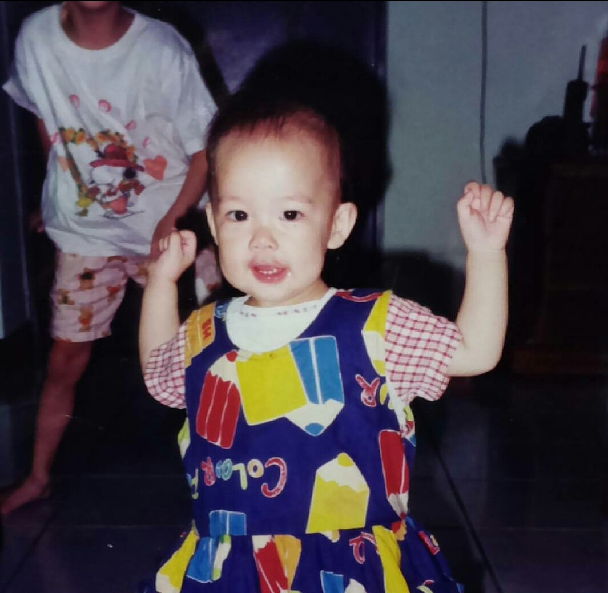

Ｘ
青
年
行
動
日
誌
行
動
夥
伴
故
事
行
動
提
案
牆
活
動
辦
法
關
於
迴
響
最
新
消
息
我們如何讓人不再只是購買一個產品，而是對於這個產品背後的製造過程有所思考、討論，進而意識自身購買行為所造成對社會與環境的影響，希望人們不要再跟著銅板經濟學的思路走。
點擊揭曉
台灣森七七
一場森產革命
我們將帶領大家走訪木工廠，體驗木製產品的生產過程，並一起思考其中的環境議題。藉由現場參與砍樹取木、加工製造，森林與我們的距離不再是一道鴻溝。透過這樣的行動，我們期許參與者開始思考生產環節中，所牽涉到的種種森林議題，甚至進一步反思──什麼是「真」環保呢？
我們是臺灣森七七，是一群雞婆於森林的青年，期許自己能成為帶領人們進入森林的領頭羊，同時渴望著大家一齊與森林展開對話，激盪碰撞出一場「森」產革命。
讓我們再多說一些...
使用木質產品究竟是否對臺灣森林友善的方式，是我們所想了解的事。只是，森林的相關知識之於大眾卻好似一片空白。為了填補這片空白地帶，資訊的公開就是當務之急。但接下來又面臨另一個問題：什麼樣的呈現方式最為有效且恰當呢？
我們認為，比起單純用產品包裝議題理念的形式，反倒是讓大眾思考環境議題更為重要。因此，團隊最後決定透過生產過程的體驗，期待培養消費者主動思考的能力。
而這樣的行動，便是森七七的「森」產革命！
議題樹
來看看我們在這議題之中扮演什麼樣的角色！
滑鼠移過揭曉 ▷
行動足跡
來我們的
大本營坐坐
點此前往
10/11
交大圖書館
室內展覽，將議題海報貼在牆上，並在看完展覽後與觀者互動。
10/14
台中新手書店
戶外展覽，利用畫架展示我們的議題海報，伴隨著互動式的回饋。
11/3
藺子工作室
來到苑裡拜訪怡雅，學習她寶貴的創業經驗，也再次燃起希望。
關鍵時點
大會師
原本想要製作資訊網頁與舉辦種樹小旅行作為資訊揭露的形式，但在和迴響團隊與行動夥伴交流討論後，轉變成透過產品來包裝我們的議題。
通往森林的入口
拜訪佳旻學姊，看見台大農產館展覽的林業資訊與手做木工作坊，發想出我們 logo 的感覺－通往森林的入口。希望未來的行動都能記得這個入口，帶大家從多元的、貼近生活的角度一起看見森林議題。
人工林的爭議
在新手書店的戶外展覽我們深刻感受到台灣人工林經營爭議性，但卻也在過程中認為此爭議性並非壞事，代表大家有一起為森林思考，爭議性就是我們之間的共鳴點，同時也得到許多鼓勵而感動。
深度議題思考
覺得希望人們不是單方面的接受我們所傳遞的森林資訊，應是消費者成為一個主動的思考者，因此決定把販賣議題產品的概念，改為帶領民眾了解生產過程的深度議題思考活動。
藺子訪後
與藺子訪後，有了議題呈現上的新想法，以往我們專注於森林生態方面的學術數據蒐集，卻忘了這些林產業背後的「人」的故事，更是可以引起大家共鳴之處，也是針對我們這個議題應該多了解的。
團隊小故事
最森七七的時刻
理想中的辦公室
下一個行動提案
我們的目標
我們的幻想
最森七七的時刻
當我們在對大家敘說森林此時此刻的狀況時，有些人可能因為覺得森林和自己生活相關性不高而露出漠不關己的臉時。
雖然森林真的不是大家經常造訪的地方，可是對人類來說也和海洋有一樣的重要性，希望大家可以給森林多一些關心！
理想中的辦公室？為什麼？
全木頭打造，被樹林環繞，可以很開放的感受到大自然的脈動，不用冷氣就很舒爽，隨著自然的氣候。
下一個行動提案會是...？為什麼？
休息，四季的冬眠期即將開始。
畢竟休息是為了走更長的路，經過迴響計畫的歷練，我們更希望能夠長期的把森林議題推廣給每一位生活在這片土地的人們，適時的充電可以讓我們的頭腦放鬆、釐清思路並有毅力完成它。
我們的目標
當正確的森林知識出現在小學課本中，我們就正式倒閉。(是一間以倒閉為目標的公司。)
理想派如我們，若有森林議題被解決、不需要我們不斷和大眾呼籲議題的重要性與鼓勵大家一起思考，眾人便能夠自發的做這件事的一天，那我們就可以安心順利的退休了。
我們的幻想
都可以順利畢業，然後想跟樹木借點時間，讓我們有更多時間把事情做好。
團隊成員
帶著大家勇敢作夢的勇者，身兼物流供應鏈腦
落實計畫後端小尖兵，擁有人文社會腦
幫助團隊辨認前進路線的魔法師，還有一顆教育兼電子工程腦

林郁庭

田詠葳

吳佩珈
一個小小的地方，可以讓我們很愜意的討論，感受靈光乍現的燈，也是離森林最近的地方。
團隊不為人知的小秘密...
我們是一群悶騷的木頭人，平常靜靜觀察，私底下話語源源不絕，不愛用電子產品，會議紀錄堅持手寫。
團隊小秘密